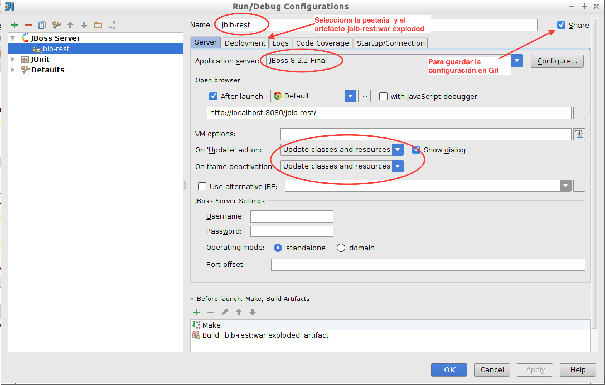
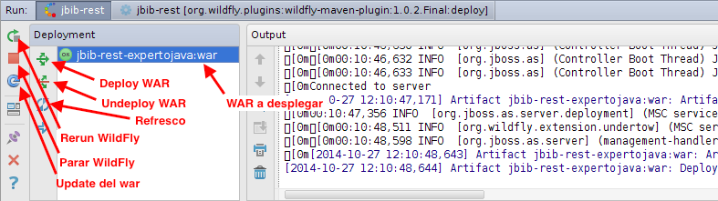

2. (1,5 puntos) Caso de estudio
2.1. Introducción a Maven
Maven es una herramienta Java de gestión del proceso de construcción de proyectos software, que simplifica la complejidad de sus distintas partes: compilación, prueba, empaquetamiento y despliegue. Es una herramienta muy popular en proyectos open source que facilita:
-
La descarga de las librerías (ficheros JAR) externas de las que depende un proyecto
-
La construcción, prueba y despliegue del proyecto desarrollado, produciendo el fichero JAR o WAR final a partir de su código fuente y del fichero POM de descripción del proyecto
Maven se origina de hecho en la comunidad open source, en concreto en la Apache Software Foundation en la que se desarrolló para poder gestionar y minimizar la complejidad de la construcción del proyecto Jakarta Turbine en 2002. El diseñador principal de Maven fue Jason van Zyl, ahora en la empresa Sonatype. En 2003 el proyecto fue aceptado como proyecto de nivel principal de Apache. En octubre de 2005 se lanzó Maven 2. Desde entonces ha sido adoptado como la herramienta de desarrollo de software de muchas empresas y se ha integrado con muchos otros proyectos y entornos. Maven 3.0 se lanzó en octubre de 2010, siendo la mayoría de sus comandos compatibles con Maven 2.
Maven es una herramienta de línea de comando, similar a las herramientas habituales en Java como javac, jar o a proyectos como Ant. Aunque es posible utilizar Maven en IDEs como Eclipse o Glassfish, es muy útil conocer la utilización de Maven en línea de comandos porque es la base de cualquier adaptación gráfica.
Una de las características principales de Maven es su enfoque declarativo, frente al enfoque orientado a tareas de herramientas tradicionales como Make o Ant. En Maven, el proceso de compilación de un proyecto se basa en una descripción de su estructura y de su contenido. Maven mantiene el concepto de modelo de un proyecto y obliga a definir un identificador único para cada proyecto que desarrollemos, así como declarar sus características (URL, versión, librerías que usa, tipo y nombre del artefacto generado, etc.). Todas estas características deben estar especificadas en el fichero POM (Project Object Model, fichero pom.xml en el directorio raíz del proyecto).
Maven impone una estructura de directorios en la que guardar los distintos elementos de un programa Java. En el caso de una aplicación web:

2.1.1. Instalación de Maven
Maven ya viene preinstalado en la máquina virtual del experto. La instalación en Linux es muy sencilla.
En primer lugar debemos descargar la última versión de la página web oficial y descomprimirla en algún directorio del sistema. En el caso de la MV, lo hemos instalado en /usr/local/maven.
Maven es una aplicación Java, y utiliza la variable JAVA_HOME para encontrar la ruta del JDK. También es necesario añadir el directorio bin de Maven al PATH del sistema. Se pueden definir en el fichero de configuración .profile de un usuario. En nuestro caso hemos modificado el único usuario de la MV expertojava. La variabel de entorno M2_HOME es utilizada por IntelliJ para localizar la ubicación de Maven. El código que hemos añadido ha sido este:
## Java
export JAVA_HOME=/usr/local/java
PATH=$JAVA_HOME/bin:$PATH
## Maven
export M2_HOME=/usr/local/maven
PATH=$PATH:/usr/local/maven/bin2.1.2. Dependencias de librerías en proyectos Java
Una característica del desarrollo de proyectos Java es la gran cantidad de librerías (ficheros JAR) necesarios para compilar y ejecutar un proyecto. Todas las librerías que se importan deben estar físicamente tanto en la máquina en la que se compila el proyecto como en la que posteriormente se ejecuta.
El proceso de mantener estas dependencias es tedioso y muy propenso a errores. Hay que obtener las librerías, cuidar que sean las versiones correctas, obtener las librerías de las que éstas dependen a su vez y distribuirlas todas ellas en todos los ordenadores de los desarrolladores y en los servidores en los que el proyecto se va a desplegar.
Por ejemplo, si nuestro proyecto necesita una implementación de JPA, como Hibernate, es necesario bajarse todos los JAR de Hibernate, junto con los JAR de los que depende, una lista de más de 15 ficheros. Es complicado hacerlo a mano y distribuir los ficheros en todos los ordenadores en los que el proyecto debe compilarse y ejecutarse. Para que Maven automatice el proceso sólo es necesario declarar la dependencia con este JAR en el fichero POM con las siguientes líneas:
...
<dependency>
<groupId>org.hibernate</groupId>
<artifactId>hibernate-entitymanager</artifactId>
<version>3.5.6-Final</version>
</dependency>
...Maven se encarga de descargar todas las bibliotecas necesarias para un proyecto cuando ejecutamos el comando mvn install. Las guarda en el denominado repositorio local, el directorio oculto .m2 en el directorio raíz del usuario, y después copia referencias a ellas en el proyecto.
2.1.3. El proceso de build de un proyecto
Los que hemos programado en C recordamos los ficheros Makefile en los que se especificaban las dependencias entre los distintos elementos de un proyecto y la secuencia de compilación necesaria para generar una librería o un ejecutable. En Java, el desarrollo de aplicaciones medianamente complejas es más complicado que en C. Estamos obligados a gestionar un gran número de recursos: código fuente, ficheros de configuración, librerías externas, librerías desarrolladas en la empresa, etc. Para gestionar este desarrollo es necesario algo de más nivel que las herramientas que proporciona Java (javac, jar, rmic, java, etc.)
¿En qué consiste el proceso de compilación y empaquetado en Java?. Básicamente en construir lo que Maven llama un artefacto (terminología de Maven que significa fichero) a partir de un proyecto Java definido con una estructura propia de Maven (apartado siguiente). Los posibles artefactos en los que podemos empaquetar un programa Java son:
- Fichero JAR
-
librería de clases o aplicación standalone. Contiene clases Java compiladas (.class) organizadas en paquetes, ficheros de recursos y (opcionalmente) otros ficheros JAR con bibliotecas usadas por las clases. En las aplicaciones enterprise, los EJB también se empaquetan en ficheros JAR que se despliegan en servidores de aplicaciones.
- Fichero WAR
-
aplicación web lista para desplegarse en un servidor web. Contiene un conjunto de clases Java, bibliotecas, ficheros de configuración y ficheros de distintos formatos que maneja el servidor web (HTML, JPG, etc.)
- Fichero EAR
-
aplicación enterprise que se despliega en un servidor de aplicaciones. Contiene bibliotecas, componentes EJB y distintas aplicaciones web (ficheros WAR).
Además, el ciclo de desarrollo de un proyecto es más complejo que esta construcción, ya que es necesario realizar un conjunto de tareas adicionales como gestionar las dependencias con librerías externas, integrar el código en repositorios de control de versiones (CVS, subversion o Git), lanzar tests o desplegar la aplicación en algún servidor de aplicaciones.
Podría pensarse que los entornos de desarrollo (Eclipse, Netbeans o IntelliJ) pueden dar una buena solución a la complejidad del proceso de construcción, pero no es así. Son imprescindibles para el desarrollo, pero no ayudan demasiado en la construcción del proyecto. La configuración de las dependencias se realiza mediante asistentes gráficos que no generan ficheros de texto comprensibles que podamos utilizar para comunicarnos con otros compañeros o equipos de desarrolladores y que pueden dar lugar a errores. El hecho de que sean entornos gráficos hacen complicado también usarlos en procesos de automatización y de integración continua.
2.1.4. Estructura de un proyecto Maven
La estructura de directorios de una aplicación web Maven es la que hemos visto anteriormente. Volvemos a mostrar aquí la figura:
El nombre del directorio raíz no influye en el proyecto Maven, podemos cambiarlo sin que afecte a ninguno de sus elementos. En ese directorio raíz se definen los siguientes directorios:
-
src: código fuente del proyecto, tanto clases principales como clases de prueba. Dentro se define un directoriomainy otrotest, en donde van el código fuente de la aplicación y su código de prueba. Dentro de ambos se define un directoriojavacon los paquetes de código fuente de la aplicación, un directoriowebappscon los ficheros HTML, JSP y de configuración de la aplicación web y un directorioresourcesen el que se dejan ficheros de configuración. Ambos directorios se añaden al classpath. -
target: clases compiladas y artefactos generados a partir del código fuente y del resto de ficheros del directoriosrc. -
fichero
pom.xml: fichero con la descripción de los elementos necesarios para todo el ciclo de vida del proyecto: compilación, test, empaquetado, despliegue e instalación en el repositorio de la empresa.
2.1.5. POM: Project Object Model
El elemento más importante de un proyecto Maven, a parte de su estructura, es su fichero POM en el que se define completamente el proyecto. Este fichero define elementos XML preestablecidos que deben ser definidos para el proyecto concreto que estamos desarrollando. Viendo algunos de ellos podemos entender también más características de Maven.
Vamos a utilizar como ejemplo la versión inicial del POM del proyecto web que vamos a construir en un rato. Veamos su fichero pom.xml. Al comienzo nos encontramos con la cabecera XML y la definición del proyecto:
<?xml version="1.0" encoding="UTF-8"?>
<project xmlns="http://maven.apache.org/POM/4.0.0" xmlns:xsi="http://www.w3.org/2001/XMLSchema-instance" xsi:schemaLocation="http://maven.apache.org/POM/4.0.0 http://maven.apache.org/xsd/maven-4.0.0.xsd"> (1)
<modelVersion>4.0.0</modelVersion>
<groupId>org.expertojava</groupId>
<artifactId>jbib-rest</artifactId>
<version>1.0-SNAPSHOT</version>(2)
<packaging>war</packaging> (3)
<name>jbib-rest</name> (4)| 1 | La primera definición project xmlns es común para todos los ficheros pom.xml. En ella se declara el tipo de esquema XML y la dirección donde se encuentra el fichero de esquema XML. Se utiliza para que los editores de XML puedan validar correctamente el fichero. Esta sintaxis depende de la versión de Maven que se esté utilizando. |
| 2 | Después aparece la identificación del proyecto, en la que hay que definir el grupo que desarrolla el proyecto (groupId), el nombre del artefacto que genera el proyecto (artifactId), el tipo de empaquetamiento (packaging) y su versión (version). Estos campos representan las denominadas coordenadas del proyecto (hablaremos de ello más adelante). En nuestro caso son org.expertojava:jbib-rest:war:1.0-SNAPSHOT. |
| 3 | En el atributo packaging debemos definir el tipo de empaquetado del artefacto resultante. En nuestro caso, será un fichero WAR que contendrá toda la aplicación web. Este artefacto se generará cuando hagamos un mvn package. |
| 4 | Por último, el atributo name define el nombre lógico del proyecto. |
A continuación se definen algunas propiedades del proyecto, que se utilizarán en los distintos procesos de Maven. En nuestro caso, por ahora, sólo la codificación de caracteres que estamos utilizando en el código fuente de nuestro proyecto:
<properties>
<project.build.sourceEncoding>UTF-8</project.build.sourceEncoding>
</properties>Después vienen la definición de las dependencias del proyecto: librerías de las que dependen el proyecto. En nuestro caso:
-
Librerías Java EE:
javax:javaee-web-api:7.0 -
Librarías para logs logs_ :
log4j:log4j:1.2.17ycommons-logging:commons-logging:1.2 -
JUnit:
junit:junit:4.11
<dependencies>
<dependency>
<groupId>javax</groupId>
<artifactId>javaee-web-api</artifactId>
<version>7.0</version>
<scope>provided</scope>
</dependency>
<dependency>
<groupId>log4j</groupId>
<artifactId>log4j</artifactId>
<version>1.2.17</version>
</dependency>
<dependency>
<groupId>commons-logging</groupId>
<artifactId>commons-logging</artifactId>
<version>1.2</version>
</dependency>
<dependency>
<groupId>junit</groupId>
<artifactId>junit</artifactId>
<version>4.11</version>
</dependency>
</dependencies>Por último, definimos algunas características de los procesos de Maven que construyen el proyecto, definiendo parámetros para los pluging de Maven que se encargan de ejecutarlos.
<build>
<finalName>${project.name}</finalName> (1)
<plugins>
<plugin>
<groupId>org.apache.maven.plugins</groupId> (2)
<artifactId>maven-compiler-plugin</artifactId>
<version>3.1</version>
<configuration>
<source>1.7</source>
<target>1.7</target>
</configuration>
</plugin>
<plugin>
<groupId>org.apache.maven.plugins</groupId> (3)
<artifactId>maven-war-plugin</artifactId>
<version>2.3</version>
<configuration>
<failOnMissingWebXml>false</failOnMissingWebXml>
</configuration>
</plugin>
<plugin>
<groupId>org.wildfly.plugins</groupId> (4)
<artifactId>wildfly-maven-plugin</artifactId>
<version>1.0.2.Final</version>
<configuration>
<hostname>localhost</hostname>
<port>9990</port>
</configuration>
</plugin>
</plugins>
</build>
</project>| 1 | En finalName definimos el nombre del artefacto generado cuando hagamos un mvn package. En nuestro caso será jbib-web.war. |
| 2 | En el plugin maven-compiler-plugin declaramos la versión de Java con la que queremos que se compilen las clases. En nuestro caso, la versión 1.7. |
| 3 | El plugin maven-war-plugin lo usamos únicamente para declarar que podemos no incluir un fichero web.xml en la aplicación. |
| 4 | Por último, el plugin de Maven de Wildfly wildfly-maven-plugin permite realizar el despliegue de la aplicación web en el servidor de aplicaciones. El despliegue se realiza con el comando mvn wildfly:deploy. |
2.1.6. Repositorios Maven
Los proyectos software modernos necesitan un gran número de clases y librerías definidas en otros proyectos. Esos proyectos pueden ser otros desarrollados por nosotros en la empresa o librerías open source bajadas de Internet.
La tarea de mantener las dependencias de un proyecto es complicada, tanto para las dependencias entre nuestros proyectos como las dependencias con otros proyectos open source disponibles en Internet. Por ejemplo, si queremos utilizar un framework como Spring, tendremos que descargarnos no sólo los JAR desarrollados en el proyecto, sino también un buen número de otras librerías open source que usa. Cada librería es un fichero JAR. ¿Qué pasa si alguna de esas librerías ya las estamos usando y las tenemos ya descargadas? O, peor aún, ¿Qué pasa si estamos usando otras versiones de esas librerías en nuestros proyectos? ¿Podremos detectar los posibles conflictos?. Maven se encarga de gestionar estas dependencias directas y las dependencias transitivas mediante los ficheros POM:
-
Descarga las librerías necesarias para construir el proyecto y los ficheros POM asociados a esas librerías
-
Resuelve dependencias transitivas, librerías que dependen de librerías de las que dependen nuestro proyecto
-
Resuelve conflictos entre librerías
Un elemento fundamental para gestionar las dependencias es poder identificar y nombrar un proyecto. En Maven el nombre de un proyecto se define mediante los siguientes elementos (que en Maven se denominan coordenadas):
- groupId
-
El grupo, compañía, equipo, organización, etc. Se utiliza una convención similar a la de los paquetes Java, comenzando por el nombre de dominio invertido de la organización que crea el proyecto. Por ejemplo, los
groupIdde la Apache Software Foundation comienzan conorg.apache - artifactId
-
Identificador único que representa de forma única el proyecto dentro del
groupId - version
-
Número de versión del proyecto, por ejemplo
1.3.5o1.3.6-beta-01. Es posible utilizar la palabraSNAPSHOTen el número de versión para indicar que es una versión en desarrollo y que todavía no está lanzada. Se utiliza internamente en los proyectos en desarrollo. La idea es que antes de que terminemos el desarrollo de la versión 1.0 (o cualquier otro número de versión), utilizaremos el nombre1.0-SNAPSHOTpara indicar que se trata de "1.0 en desarrollo". - packaging
-
Tipo de empaquetamiento del proyecto. Por defecto es
jar. Un tipojargenera una librería JAR, un tipowarse refiere a una aplicación web.
En Maven un proyecto genera un artefacto. El artefacto puede ser un fichero JAR, WAR o EAR. El tipo de artefacto viene indicado en el tipo de empaquetamiento del proyecto.
El nombre final del fichero resultante de la construcción del proyecto es por defecto: <artifactId>-<version>.<packaging>.
Por ejemplo, Apache ha desarrollado el proyecto commons-email que proporciona una serie de utilidades para la gestión de correos electrónicos en Java. Sus coordenadas son:
org.apache.commons:commons-email:1.1:jarEl artefacto (fichero JAR) generado por el proyecto tiene como nombre email-1.1.jar
Cuando ejecutamos Maven por primera vez veremos que descarga un número de ficheros del repositorio remoto de Maven. Estos ficheros corresponden a plugins y librerías que necesita para construir el proyecto con el que estamos trabajando. Maven los descarga de un repositorio global a un repositorio local donde están disponibles para su uso. Sólo es necesario hacer esto la primera vez que se necesita la librería o el plugin. Las siguientes ocasiones ya está disponible en el repositorio local.
La direcciones en las que se encuentran los repositorios son las siguientes:
- Repositorio central
-
El repositorio central de Maven se encuentra en http://repo1.maven.org/maven2. Se puede acceder a la dirección con un navegador y explorar su estructura.
- Repositorio local
-
El repositorio local se encuentra en el directorio
${HOME}/.m2/repository.
La estructura de directorios de los repositorios (tanto el central como el local) está directamente relacionada con las coordenadas de los proyectos. Los proyectos tienen la siguiente ruta, relativa a la raíz del repositorio:
/<groupId>/<artifactId>/<version>/<artifactId>-<version>.<packaging>Por ejemplo, el artefacto commons-email-1.1.jar, con coordenadas org.apache.commons:commons-email:1.1:jar está disponible en la ruta:
/org/apache/commons/commons-email/1.1/commons-email-1.1.jar]]2.1.7. Dependencias de versiones
El estándar de Maven para los números de versiones es muy importante, porque permite definir reglas para gestionar correctamente las dependencias en caso de conflicto. El número de versión de un proyecto se define por un número principal, un número menor y un número incremental. También es posible definir un calificador, para indicar una versión alfa o beta. Los números se separan por puntos y el calificador por un guión. Por ejemplo, el número 1.3.5-alpha-03 define un número de versión principal 1, la versión menor 3, la versión incremental de 5 y el calificador de alpha-03.
Maven compara las versiones de una dependencia utilizando este orden. Por ejemplo, la versión 1.3.4 representa un build más reciente que la 1.0.9. Los clasificadores se comparan utilizando comparación de cadenas. Hay que tener cuidado, porque alpha10 es anterior a alpha2; habría que llamar al segundo alpha02.
Maven permite definir rangos de versiones en las dependencias, utilizando los operadores de rango exclusivos (, ) o inclusivos [, ]. Así, por ejemplo, si queremos indicar que nuestro proyecto necesita una versión de JUnit mayor o igual de 3.8, pero menor que 4.0, lo podemos indicar con el siguiente rango:
<version>[3.8,4.0)</version>Si una dependencia transitiva necesita la versión 3.8.1, esa es la escoge Maven sin crear ningún conflicto.
Es posible también indicar rangos de mayor que o menor que dejando sin escribir ningún número de versión antes o después de la coma. Por ejemplo, [4.0,) representa cualquier número mayor o igual que 4.0, (,2.0) representa cualquier versión menor que la 2.0 y [1.2] significa sólo la versión 1.2 y ninguna otra.
Cuando dos proyectos necesitan dos versiones distintas de la misma librería, Maven intenta resolver el conflicto, descargándose la que satisface todos los rangos. Si no utilizamos los operadores de rango estamos indicando que preferimos esa versión, pero que podríamos utilizar alguna otra. Por ejemplo, es distinto especificar 3.1 y [3.1]. En el primer caso preferimos la versión 3.1, pero si otro proyecto necesitara la 3.2 Maven se descargaría esa. En el segundo caso exigimos que la versión descargada sea la 3.1. Si otro proyecto especifica otra versión obligatoria, por ejemplo 3.2, entonces el proyecto no se compilará.
La utilización de la palabra SNAPSHOT en una dependencia hace que Maven descargue al repositorio local la última versión disponible del artefacto. Por ejemplo, si declaramos que necesitamos la librería foo-1.0-SNAPSHOT.jar cuando construyamos el proyecto Maven intentará buscar en el repositorio remoto la última versión de esta librería, incluso aunque ya exista en el repositorio local. Si encuentra en el repositorio remoto la versión foo-1.0.-20110506.110000-1.jar (versión que fue generada el 2011/05/06 a las 11:00:00) la descarga y sustituye la que tiene en el local. De forma inversa, cuando ejecutamos el goal install y se despliega el artefacto en el servidor remoto, Maven sustituye el palabra SNAPSHOT por la fecha actual.
2.1.8. Gestión de dependencias
Hemos visto que una de las características principales de Maven es la posibilidad de definir las dependencias de un proyecto. En la sección dependencies del fichero POM se declaran las librerías necesarias para compilar, testear y ejecutar nuestra aplicación. Maven obtiene estas dependencias del repositorio central o de algún repositorio local configurado por nuestra empresa y las guarda en el directorio .$HOME/.m2/repository. Si utilizamos la misma librería en un varios proyectos, sólo se descargará una vez, lo que nos ahorrará espacio de disco y tiempo. Y lo que es más importante, el proyecto será mucho más ligero y portable, porque no llevará incluidas las librerías que necesita para su construcción.
Ya hemos visto en apartados anteriores cómo se declaran las dependencias en el fichero POM. Cada dependencia se define de forma unívoca utilizando sus coordenadas. El mecanismo de declaración de las dependencias es el mismo para las dependencias de librerías externas como para las definidas dentro de la organización.
Para definir una dependencia hay que identificar también el número de versión que se quiere utilizar, utilizando la nomenclatura del apartado anterior. Por ejemplo, la siguiente dependencia especifica una versión 3.0 o posterior de hibernate.
<dependency>
<groupId>org.hibernate</groupId>
<artifactId>hibernate</artifactId>
<version>[3.0,)</version>
</dependency>Un concepto fundamental en Maven es el de dependencia transitiva. En los repositorios no solo se depositan los artefactos generados por los proyectos, sino también el fichero POM del proyecto. Y en ese fichero se definen las dependencias propias del proyecto. Por ejemplo, junto con el artefacto hibernate-3.0.jar se encuentra el fichero POM hibernate-3.0.pom.xml en el que se definen sus propias dependencias, librerías necesarias para Hibernate-3.0. Estas librerías son dependencias transitivas de nuestro proyecto. Si nuestro proyecto necesita Hibernate, e Hibernate necesita estas otra librería B, nuestro proyecto también necesita (de forma transitiva) la librería B. A su vez esa librería B tendrá también otras dependencias, y así sucesivamente.
Maven se encarga de resolver todas las dependencias transitivas y de descargar al respositorio local todos los artefactos necesarios para que nuestro proyecto se construya correctamente.
Otro elemento importante es el ámbito (scope) en el que se define la dependencia. El ámbito por defecto es compile y define librerías necesarias para la compilación del proyecto. También es posible especificar otros ámbitos. Por ejemplo test, indicando que la librería es necesaria para realizar pruebas del proyecto:
<dependency>
<groupId>junit</groupId>
<artifactId>junit</artifactId>
<version>4.8.1</version>
<type>jar</type>
<scope>test</scope>
</dependency>Otros ámbitos posibles son provided y runtime. Una dependencia se define provided cuando es necesaria para compilar la aplicación, pero que no se incluirá en el WAR y no será desplegada. Por ejemplo las APIs de servlets:
<dependency>
<groupId>javax.servlet</groupId>
<artifactId>servlet-api</artifactId>
<version>2.4</version>
<scope>provided</scope>
</dependency>Las dependencias runtime son dependencias que no se necesitan para la compilación, sólo para la ejecución. Por ejemplo los drivers de JDBC para conectarse a la base de datos:
<dependency>
<groupId>mysql</groupId>
<artifactId>mysql-connector-java</artifactId>
<version>3.1.13</version>
<scope>runtime</scope>
</dependency>Una herramienta muy útil es el informe de dependencia. Este informe se genera cuando se ejecuta el objetivo site. Maven construye un sitio web con información sobre el proyecto y coloca el informe en el fichero target/dependencies.html:
$ mvn siteEl informe muestra una lista de dependencias directas y transitivas y su ámbito.
2.1.9. El ciclo de vida de Maven
El concepto de ciclo de vida es central para Maven. El ciclo de vida de un proyecto Maven es una secuencia de fases que hay que seguir de forma ordenada para construir el artefacto final.
Las fases principales del ciclo de vida por defecto son:
- validate
-
valida que el proyecto es correcto y que está disponible toda la información necesaria
- process-resources
-
procesar el código fuente, por ejemplo para filtrar algunos valores
- compile
-
compila el código fuente del proyecto
- test
-
lanza los tests del código fuente compilado del proyecto utilizando el framework de testing disponible. Estos tests no deben necesitar que el proyecto haya sido empaquetado o desplegado
- package
-
empaqueta el código compilado del proyecto en un formato distribuible, como un JAR
- integration-test
-
procesa y despliega el paquete en un entorno en donde se pueden realizar tests de integración
- verify
-
lanza pruebas que verifican que el paquete es válido y satisface ciertos criterios de calidad install: instala el paquete en el repositorio local, para poder ser usado como librería en otros proyectos locales
- deploy
-
realizado en un entorno de integración o de lanzamiento, copia el paquete final en el repositorio remoto para ser compartido con otros desarrolladores y otros proyectos.
Todas estas fases se lanzan especificándolas como parámetro en el comando mvn. El comando mvn hay que ejecutarlo estando en el directorio del proyecto. Si ejecutamos una fase, Maven se asegura que el proyecto pasa por todas las fases anteriores. Por ejemplo:
$ mvn installEsta llamada realiza la compilación, los tests, el empaquetado los tests de integración y la instalación del paquete resultante en el repositorio local de Maven.
|
Para un listado completo de todas las opciones de un comando |
2.1.10. Ejecución de tests
Los tests de unidad son una parte importante de cualquier metodología moderna de desarrollo, y juegan un papel fundamental en el ciclo de vida de desarrollo de Maven. Por defecto, Maven obliga a pasar los tests antes de empaquetar el proyecto. Maven permite utilizar los frameworks de prueba JUnit y TestNG. Las clases de prueba deben colocarse en el directorio src/test.
Para ejecutar los tests se lanza el comando mvn test:
$ mvn test
[INFO] Scanning for projects...
...
-------------------------------------------------------
T E S T S
-------------------------------------------------------
Running org.expertojava.jbibrest.modelo.UsuarioTest
Tests run: 5, Failures: 0, Errors: 0, Skipped: 0, Time elapsed: 0.082 sec
Running org.expertojava.jbibrest.modelo.OperacionTest
Tests run: 5, Failures: 0, Errors: 0, Skipped: 0, Time elapsed: 0.141 sec
Tests run: 8, Failures: 0, Errors: 0, Skipped: 0, Time elapsed: 0.018 sec
Running org.expertojava.jbibrest.modelo.AvisoTest
Tests run: 1, Failures: 0, Errors: 0, Skipped: 0, Time elapsed: 0.012 sec
Results :
Tests run: 19, Failures: 0, Errors: 0, Skipped: 0Maven compilará los tests si es necesario. Por defecto, los tests deben colocarse en el directorio src/test siguiendo una estructura idéntica a la estructura de clases del proyecto. Maven ejecutará todas las clases que comiencen o terminen con Test o que terminen con TestCase.
Los resultados detallados de los tests se producen en texto y en XML y se dejan en el directorio target/surefire-reports. Es posible también generar los resultados en HTML utilizando el comando:
$ mvn surefire-report:reportEl informe HTML se generará en el fichero target/site/surefire-report.html.
2.1.11. Uso de Maven en IntelliJ
IntelliJ reconoce los proyectos Maven a través del POM. Para importar un proyecto Maven en el IDE debes pulsar en el POM del proyecto. IntelliJ analiza el POM, descarga todas las librerías necesarias, identifica los directorios de la aplicación y los configura como directorios de fuentes, de tests, etc.
En la siguiente imagen vemos la estructura de directorios y las librerías de una versión inicial del proyecto web cargado. Podemos ver este panel en la parte superior izquierda de IntelliJ.
-
Bajo el directorio raíz vemos el directorio
srccon los subdirectoriosmainytest. También los ficherospom.xmlcon el POM de Maven y el fichero.gitignorecon los patrones a ignorar en el control de versiones. Y también se encuentra el directorio.ideay el ficherojbib-rest.imlpropios del IDE. -
Debajo vemos las librerías declaradas en el POM y descargadas por Maven. IntelliJ las reconoce como librerías del proyecto y las incluirá en el paquete WAR cuando se realice el despliegue y ejecución del proyecto.
En la parte superior derecha de IntelliJ podemos ver el panel de Maven. Desde este panel podemos interactuar con el comando Maven.
-
Para ejecutar un goal, por ejemplo
package, debemos seleccionar el objetivo y pulsar en el pequeño botón play, o hacer un doble click sobre el objetivo. Veremos que se abre en la parte inferior de IntelliJ un panel en el que se muestra la ejecución del comando Maven. El resultado es el mismo que si abrimos un terminal, nos movemos a la raíz del proyecto (que contiene el fichero POM) y ejecutamos desde línea de comando:$ mvn test -
El plugin
org.wildfly.pluginsproporciona goals adicionales relacionados con el despliegue del WAR en el servidor de aplicaciones. Los veremos más adelante. -
El icono Maven sirve para abrir una ventana de diálogo en la que podemos lanzar el comando Maven de forma textual, escribiendo los parámetros adicionales que necesitemos
-
El botón de refresco sirve para recargar el POM en IntelliJ y actualizar la estructura del proyecto y sus dependencias si hemos realizado algún cambio en el fichero.
Otra característica interesante de IntelliJ es que permite añadir dependencias en el POM de forma interactiva. Desde el fichero pom.xml pulsamos el botón derecho y seleccionamos Generate… (o pulsamos Alt+Insertar) y aparecerá el siguiente menú que permite modificar elementos del POM de forma interactiva:

Por ejemplo, seleccionando Dependency aparece una herramienta de búsqueda de librerías que permite filtrar por nombre y explorar las distintas versiones de las librerías disponibles en el repositorio central de Maven:

2.1.12. Maven con Git
Para crear un repositorio Git con un proyecto Maven, hay que hacer lo habitual: inicializar Git en la raíz del proyecto y añadir todos sus ficheros. Hay que tener cuidado de añadir en el repositorio sólo los ficheros fuente. Todos los ficheros de artefacto que crea Maven a partir de los ficheros fuente originales deben ser ignorados. Para ello basta con ignorar el directorio target.
El siguiente fichero .gitignore contiene las reglas que determinan los ficheros ignorados en un proyecto Maven en el que trabajamos con IntelliJ. Es recomendable ignorar también el fichero .idea/workspace.xml que contiene el estado de trabajo del IDE (pestañas abiertas, dimensiones de la ventana actual, etc.).
.gitignore# ignore Maven generated target folders
target
# ignore IDEA files
.idea/workspace.xml2.1.13. Cómo crear un proyecto Maven mínimo
Para empezar a desarrollar un proyecto con Maven necesitamos comenzar con un proyecto Maven mínimo, en el que ir añadiendo todo el código. Hemos visto que un proyecto Maven consiste en:
-
un directorio de proyecto en el que se incluye un fichero POM con la descripción de las dependencias y otras características del proyecto
-
la estructura de directorios propia de los proyectos Maven vista anteriormente
| El directorio contenedor del fichero POM y de la estructura de directorios Maven puede tener cualquier nombre. El nombre del proyecto Maven sólo se define en el fichero POM. Esta característica simplifica el manejo de los proyectos Maven, haciéndolos independiente del nombre del directorio donde están contenidos. |
Hay varias formas posibles de crear un proyecto Maven. A lo largo del curso utilizaremos cualquiera de estas opciones indistintamente.
Creación manual de directorios y POM
Una forma básica de crear esta estructura mínima es crear la estructura de directorios manualmente y un fichero POM mínimo en el que se defina el nombre del proyecto. Pero esta es una forma bastante tediosa, sobre todo por el trabajo de crear a mano la estructura de directorios.
Utilizando un arquetipo
Para crear el proyecto de forma más cómoda podemos hacerlo a partir de un arquetipo Maven (desde línea de comando con el comando mvn archetype:generate, o desde IntelliJ) o a partir de una plantilla inicial que ya tengamos creada. En el primer caso como parte del proceso de creación se pide el nombre del proyecto que estamos creando, para añadirla al fichero POM. En el segundo caso debemos de cambiar este nombre a mano en el fichero POM.
Para crear un proyecto Maven mínimo desde un arquetipo podemos usar el arquetipo org.codehaus.mojo.archetypes:webapp-javaee7:1.1 o también el arquetipo de Adam Bien com.airhacks:javaee7-essentials-archetype:1.3 (enlace GitHub).
Desde una plantilla inicial en Bitbucket
También puedes tener una plantilla básica inicial en un repositorio Git como Bitbucket. En nuestro caso puedes usar la plantilla ejemplo-webapp que hemos dejado en Bitbucket. Debes descargarla y cambiar el nombre del proyecto en el POM.
2.2. Paso a paso: creación del proyecto Git
Por hacer sencillo el proceso de creación vamos a hacer un fork del proyecto inicial que hemos dejado en Bitbucket en el que ya hemos creado la estructura de directorios y el fichero POM necesarios, junto con el fichero .gitignore necesario para Git.
-
Haz un fork en tu cuenta de Bitbucket del proyecto
java_ua/jbib-rest -
Descarga a tu ordenador este proyecto recién copiado. Puedes usar un
git clonedesde el terminal o la opción de IntelliJ Check out from Version Control > Git. Colócalo, por ejemplo, en el escritorio.
2.3. Paso a paso: despliegue con Maven
El proyecto de aplicación web que vamos a desarrollar a lo largo del curso se compone de dos partes principales:
-
Una aplicación Java que se despliega en un servidor Java EE (WildFly) e implementa un API REST que proporciona la lógica de negocio
-
Una aplicación JavaScript que proporciona la interfaz de usuario que se ejecuta en el navegador
Vamos a comenzar a construir la aplicación Java, un artefacto WAR que contendrá distintos paquetes que iremos desarrollando a lo largo de estas sesiones.
Comenzaremos con una aplicación muy básica, similar a la que has desarrollado en la asignatura de Componentes Web, que contiene algunos elementos iniciales básicos:
-
Fichero JSP con un formulario que envía una petición a un servlet
-
Servlet que procesa los parámetros de la petición y gestiona algún error e invoca a una clase del modelo
-
Clase del modelo que implementa una sencilla funcionalidad y realiza una mínima gestión de errores
-
Logging
-
Tests
Todo esto en un proyecto Maven con un POM que permite generar el WAR y desplegarlo en el servidor WildFly.
La mayor parte de esta aplicación básica ya está preparada en el proyecto que te has descargado.
-
Vamos a comenzar probando que el proyecto compila correctamente y que los tests pasan. Abre un terminal, vete al directorio de proyeto y lanza el comando
mvn test:$ cd jbib-web $ mvn test ... ------------------------------------------------------- T E S T S ------------------------------------------------------- Running org.expertojava.jbibrest.modelo.NombreTest 06/11/2015 11:31:22 - DEBUG - Test getNombreDeberiaDevolverSraCuandoHombre 06/11/2015 11:31:22 - DEBUG - Creada instancia de Nombre 06/11/2015 11:31:22 - DEBUG - Test getNombreDeberiaDevolverSrCuandoHombre 06/11/2015 11:31:22 - DEBUG - Creada instancia de Nombre Tests run: 2, Failures: 0, Errors: 0, Skipped: 0, Time elapsed: 0.255 sec Results : Tests run: 2, Failures: 0, Errors: 0, Skipped: 0 [INFO] ------------------------------------------------------------------------ [INFO] BUILD SUCCESS [INFO] ------------------------------------------------------------------------ [INFO] Total time: 3.162 s [INFO] Finished at: 2015-11-06T11:31:22+01:00 [INFO] Final Memory: 14M/127M [INFO] ------------------------------------------------------------------------ -
Vamos ahora a desplegar la aplicación web desde línea de comando. Abre otro terminal y lanza WildFly con el comando:
$ standalone.shCuando haya arrancado WildFly, en el otro terminal ejecuta el goal
wildfly:deploy. El proyecto se deberá desplegar correctamente en el servidor de aplicaciones:$ cd jbibrest-expertojava $ mvn wildfly:deploy ... [INFO] [INFO] --- maven-war-plugin:2.3:war (default-war) @ jbib-rest --- [INFO] Packaging webapp [INFO] Assembling webapp [jbib-rest] in [/home/expertojava/Escritorio/jbib-rest0/target/jbib-rest] [INFO] Processing war project [INFO] Copying webapp resources [/home/expertojava/Escritorio/jbib-rest0/src/main/webapp] [INFO] Webapp assembled in [122 msecs] [INFO] Building war: /home/expertojava/Escritorio/jbib-rest0/target/jbib-rest.war [INFO] [INFO] <<< wildfly-maven-plugin:1.0.2.Final:deploy (default-cli) < package @ jbib-rest <<< [INFO] [INFO] --- wildfly-maven-plugin:1.0.2.Final:deploy (default-cli) @ jbib-rest --- nov 06, 2015 11:44:55 AM org.xnio.Xnio <clinit> INFO: XNIO version 3.2.2.Final nov 06, 2015 11:44:55 AM org.xnio.nio.NioXnio <clinit> INFO: XNIO NIO Implementation Version 3.2.2.Final nov 06, 2015 11:44:55 AM org.jboss.remoting3.EndpointImpl <clinit> INFO: JBoss Remoting version 4.0.3.Final [INFO] ------------------------------------------------------------------------ [INFO] BUILD SUCCESS [INFO] ------------------------------------------------------------------------ [INFO] Total time: 9.782 s [INFO] Finished at: 2015-11-06T11:44:59+01:00 [INFO] Final Memory: 18M/178M [INFO] ------------------------------------------------------------------------ -
Probamos ahora la aplicación desplegada. En un navegador accede a la URL http://localhost:8080/jbib-rest/ en la que estará respondiendo la aplicación. Aparecerá un sencillo formulario con el que puedes comprobar que la aplicación está funcionando. Rellénalo y pulsa Enviar. Verás la petición en la URL y la página resultante con un saludo.
-
Prueba a editar la URL de la petición a mano, cambiando algunos parámetros:
http://localhost:8080/jbib-rest/holamundo?nombre=Leia&edad=22&genero=mujer -
Prueba a introducir parámetros erróneos como un género que no existe o una edad negativa. En algunos casos el servlet detectará el error y devolverá un error 400 (BAD REQUEST) y en otros el error se detectará en la clase Java que implementa la lógica de negocio y se generará una excepción en tiempo de ejecución y un mensaje en el log. El log está configurado para aparecer en la consola.
-
En IntelliJ repasa el código de la aplicación:
-
El fichero
index.jspensrc/main/webapp -
El servlet
org.expertojava.jbibrest.HolaMundo.javaensrc/main/java/ -
La clase de modelo
org.expertojava.jbibrest.modelo.Nombretambién en el directorio de fuentesPiensa las siguientes preguntas sobre la aplicación: ¿Quién construye la cadena de saludo? ¿Qué parámetros hay que pasar? ¿Qué prerequisitos deben cumplir esos parámetros? ¿Desde dónde se invoca a esa construcción? ¿Quién, qué códigos de error HTTP se devuelven y en qué casos?
-
-
Los tests merecen mención especial. Son muy sencillos, se encuentran en el fichero
org.expertojava.jbib.modelo.NombreTest.javaen el directoriosrc/test/java. Comprueban el métodogetNombre()del modelo.package org.expertojava.jbibrest.modelo; import org.apache.commons.logging.Log; import org.apache.commons.logging.LogFactory; import org.junit.Test; import static org.junit.Assert.*; public class NombreTest { private static Log logger = LogFactory.getLog(NombreTest.class); @Test public void getNombreDeberiaDevolverSrCuandoHombre() throws Exception { logger.debug("Test getNombreDeberiaDevolverSrCuandoHombre"); Nombre nombre = new Nombre("Jack", 40, Genero.hombre); String nombreStr = nombre.getNombre(); assertTrue(nombreStr.equals("Sr. Jack (40 años)")); } @Test public void getNombreDeberiaDevolverSraCuandoMujer() throws Exception { logger.debug("Test getNombreDeberiaDevolverSraCuandoHombre"); Nombre nombre = new Nombre("Kate", 30, Genero.mujer); String nombreStr = nombre.getNombre(); assertTrue(nombreStr.equals("Sra. Kate (30 años)")); } } -
Elimina la aplicación WAR desplegada haciendo:
$ mvn wildfly:undeploy
|
Para comprobar si el WAR está desplegado puedes conectarte a la URL: http://localhost:9990/, entrar en la consola de administración del servidor y seleccionar Runtime > Manage Deployments. Desde esa pantalla puedes gestionar las aplicaciones desplegadas. |
-
Termina deteniendo el servidor WildFly haciendo Ctrl+c en el terminal
2.4. Paso a paso: despliegue con IntelliJ
Veamos ahora cómo hacer el despliegue de la aplicación web usando IntelliJ.
-
Empezamos abriendo el proyecto IntelliJ
jbib-rest. En el repositorio Git se ha guardado también el fichero.ideaque hay en la raíz del directorio, por lo que IntelliJ reconoce el proyecto y sus características. En el caso en que no estuviera este fichero habría que importarlo como un proyecto Maven, haciendo un doble click en el fichero POM. -
Creamos una configuración de ejecución del tipo JBoss Server > Local. Le ponemos como nombre
jbib-rest, seleccionamos JBoss 8.1.0.Final como servidor de aplicaciones. Pulsamos en la pestaña de Deployment y en el símbolo + seleccionamos Artifact… > jbib-rest:war exploded. Seleccionamos también Update Classes and Resources para permitir desplegar en caliente las clases compiladas en las que hemos realizado cambios y marcamos la casilla Share para que se guarde en el repositorio Git la configuración de ejecución: -
Ahora pulsamos el botón de ejecución junto al desplegable con el nombre de la configuración de ejecución. Si queremos activar los cambios en caliente debemos pulsar el botón de depuración.

Veremos cómo se abre en la parte inferior el panel Run. Está dividido en dos zonas. En la zona derecha se muestra la consola del servidor de aplicaciones seleccionado en la configuración de ejecución (WildFly). El servidor se pone en marcha y vemos los mensajes que va escribiendo. En la parte izquierda está el panel de herramientas relacionadas con el despliegue de aplicación.
En la configuración de ejecución hemos seleccionado el artefacto
jbib-rest:war exploded. IntelliJ compila las clases, las deja en el directoriotarget/classes, las copia en un directorio de despliegue de WildFly y abre una navegador en la página definida en la configuración de ejecución. Si todo ha funcionado bien, veremos la página con el formulario. Cuando introducimos los datos vemos el saludo. -
Podríamos también seleccionar el artefacto
jbib-rest:war. En este caso IntelliJ compilaría las clases y ahora las empaquetaría en el ficherojbib-rest.war(en el mismo directoriotarget). -
Desde IntelliJ también podemos usar el panel de Maven y desplegar (o seleccionar cualquier otro objetivo) con él el WAR. Por ejemplo, una vez desplegado el WAR podemos pulsar en el objetivo Plugins > wildfly > wildfly:undeploy para eliminar el WAR. Cuando lo hacemos se abre una nueva pestaña en el panel de consola en la que aparece la salida del comando Maven. Podemos intentar cargar la página inicial para comprobar que la aplicación ya no está disponible. Esto sólo funciona cuando se ha escogido el artefacto
jbib-rest:war.
|
Después de modificar el estado de un artefacto (desplegarla o eliminarla) con Maven, su estado no se actualiza correctamente en el panel de ejecución. Debes pulsar el botón de refresco para actualizarlo. |
2.5. Caso de estudio y modelo de dominio
2.5.1. Introducción
A partir de un supuesto básico de la gestión de una biblioteca, vamos a crear un caso de estudio completo que evolucionará conforme estudiemos las diferentes tecnologías de la plataforma Java Enterprise.
El objetivo de esta sesión es introducir el caso de estudio que vamos a desarrollar, obtener una visión global del proyecto, fijando los casos de uso y requisitos principales y definiendo el esqueleto inicial del problema.
2.5.2. Historias de usuario
Un instituto de educación secundaria nos ha encargado que desarrollemos una aplicación para la gestión de los préstamos realizados en la biblioteca del centro, lo que implica tanto una gestión de los libros como de los alumnos y profesores que realizan estos prestamos.
Tras una serie de entrevistas y reuniones con diferente personal del centro, hemos decidido hacer un prototipo inicial que servirá para probar el funcionamiento de la parte de la aplicación destinada a los clientes de la biblioteca: profesores y alumnos que van a poder solicitar préstamos de libros a través de la aplicación.
En concreto, las características que vamos a implementar en este prototipo serán las siguientes:
-
La biblioteca contiene libros. El sistema debe guardar toda la información necesaria de cada libro: su título, autor, ISBN, etc. Puede existir más de un ejemplar de un mismo libro. Se quiere también guardar la información propia de cada ejemplar: fecha de adquisición, defectos que pueda tener, etc. También contamos con recomendaciones que ligan un libro origen con otros recomendados a partir de él (y un comentario por recomendación).
-
Los usuarios de la biblioteca (profesores y alumnos) utilizarán la aplicación para realizar una serie de acciones sobre estos libros: consultar su disponibilidad, pedirlos prestados, consultar la lista de libros prestados, etc. En concreto:
-
Pedir prestado un ejemplar de un libro (que el personal entregará al usuario cuando éste se pase por el mostrador de la biblioteca).
-
Consultar el estado de los libros y sus ejemplares: un ejemplar puede estar prestado o disponible.
-
Consultar los libros que tiene prestados.
-
Consultar los libros de la biblioteca.
-
-
La fecha de devolución del préstamo dependerá de si el usuario es alumno o profesor y empezará a contar a partir del momento en que el ejemplar se toma prestado. El número máximo de libros que puede tener en préstamo un usuario dependerá también de si es profesor o alumno. Cuando un libro se devuelve, se borra el registro del préstamo del usuario y se crea un nuevo registro en el histórico de préstamos.
-
Cuando el usuario se retrasa en la devolución de un préstamo se le creará una multa. Teniendo una multa no podrá pedir prestado ningún otro libro. Cuando termine de devolver todos los libros comenzará a descontar los días de penalización. El número de días de penalización será la suma de los retrasos en las devoluciones de todos los libros prestados. Cuando pasa la fecha de finalización, la multa se elimina del usuario y se crea un nuevo registro en el histórico de multas.
Estas funcionalidades las vamos a convertir más adelante en casos de uso y las vamos a implementar a lo largo del curso, conforme vaya avanzando el proyecto de integración.
2.5.3. Requisitos de información (IRQ)
Los requisitos de información resumen la información persistente que nos interesa almacenar relacionada con el sistema.
Respecto a un usuario, nos interesa almacenar:
-
Tipo de usuario: profesor, alumno
-
Login (obligatorio) y passwod
-
Nombre y apellidos
-
Correo electrónico
-
Lista de préstamos actuales del usuario
-
Multa actual (si existe) del usuario
-
Datos referentes a su dirección, como son calle, número, piso, ciudad y código postal
-
Si el usuario es alumno, necesitaremos guardar un telefono de los padres
-
Si el usuario es profesor, necesitaremos el nombre de su departamento
Podremos obtener el estado de un usuario:
-
Activo: Estado por defecto, puede tomar libros prestados
-
Moroso: Tiene libros fuera de plazo por devolver, no puede tomar libros prestados
-
Multado: Tiene una multa actual abierta, no puede tomar libros prestados
Respecto a un libro, nos interesa almacenar:
-
ISBN (obligatorio)
-
Título y autor
-
Número de páginas
-
Número de ejemplares comprados
-
Número de ejemplares disponibles: cambiará conforme se presten y devuelvan ejemplares
-
URI de la portada: dirección web de la imagen de donde se puede cargar la portada
Queremos que la aplicación realice también recomendaciones de libros, de forma que para un libro a prestar se muestre una lista de libros relacionados. Para ello tendremos recomendaciones que relacionarán un libro origen con un libro recomendado y un comentario.
Respecto a un ejemplar, almacenaremos:
-
Número de identificación del ejemplar (obligatorio, código definido por el personal)
-
Identificación del libro al que pertenece el ejemplar
-
Fecha de adquisición
-
Observaciones: texto sobre el estado del ejemplar
Un préstamo representa un ejemplar en posesión de un usuario (es un préstamo activo). En cada préstamo guardaremos:
_ Ejemplar del préstamo _ Usuario del préstamo - Fecha de préstamo - Fecha en la que debería devolverse
Cuando un usuario se retrase en la devolución de un libro, se le creará una multa. De cada multa nos interesa saber:
-
Usuario que tiene la multa
-
Fecha de inicio
-
Días acumulados (para el caso en que se haya abierto una multa y todavía queden ejemplares por devolver)
-
Fecha de finalización
También queremos guardar los históricos de préstamos y de multas. Los históricos guardarán los identificadores de los ejemplares, usuarios y multas, para poder realizar consultas históricas. El histórico de préstamo guardará también la fecha de devolución del ejemplar.
2.5.4. Casos de uso
Los casos de uso son bastante sencillos. Vamos a centrarnos sólo en la parte del usuario registrado en la biblioteca, dejando para otro momento la parte de la aplicación del bibliotecario en la que se realizaría una gestión (altas, bajas y modificaciones) de los libros, ejemplares y usuarios. El siguiente esquema muestra los casos de uso de un usuario logeado en el sistema:

El usuario podrá consultar los libros disponibles en la biblioteca y obtener más información sobre aquellos en los que esté interesado, accediendo a la pantalla de detalle del libro. Desde esta pantalla de detalle podrá solicitar el préstamo del libro y ver la información de libros recomendados relacionados con el actual.
Para hacerse una idea mejor del funcionamiento de la aplicación es conveniente hacer diseños iniciales o mockups de estas pantallas, junto con un esquema de navegación de las mismas. Los vemos a continuación.
Esquema de navegación:

Pantalla con el listado de libros:
Pantalla con el detalle de libro:

Pantalla con los libros que tiene prestados un usuario:

Estos son bocetos iniciales de pantallas. A partir de ellas, del modelo de datos y de las reglas de negocio que veremos más adelante, diseñaremos el API REST con las funcionalidades que ofrecerá nuestro servicio.
2.5.5. Requisitos de restricción (CRQ)
Podemos resumir en la siguiente tabla las restricciones a aplicar a los casos de uso anteriores:
| Tipo de usuario | Número máximo de préstamos | Días de préstamo |
|---|---|---|
Alumno |
5 |
7 |
Profesor |
8 |
30 |
El máximo de libros prestados de un alumno es 6. Los libros prestados los tiene que devolver antes de 7 días.
En el momento que un usuario tenga una demora en la devolución de un préstamo, se considerará al usuario moroso y se le impondrá una penalización del doble de días de desfase durante los cuales no podrá ni reservar ni realizar préstamos de libros.
2.5.6. Modelo de clases
A partir de los requisitos y tras unas sesiones de modelado, hemos llegado al siguiente modelo de clases conceptual representado mediante el siguiente diagrama UML:
Utilizaremos un modelo de clases como punto de partida del modelo de datos. En la siguiente sesión construiremos el modelo de datos basándonos en este modelo de clases y utilizando JPA (Java Persistence API). Veremos que este enfoque se denomina ORM (Object Relational Mapping), porque permite definir una relación directa (mapping) entre clases Java y tablas de la base de datos. La relación entre clases Java y tablas se define por medio de anotaciones JPA añadidas en el código fuente de las clases.
Vemos que casi todas las clases tienen un atributo id de tipo Long. Será la clave primaria de la tabla asociada a la clase y será generado automáticamente por la base de datos. Durante un tiempo de la vida del objeto, antes de ser insertado en la base de datos, este identificador va a ser null. Tenemos que tener en cuenta esto a la hora de definir correctamente los métodos equals y hashCode.
|
¿Por dónde empezamos al hacer el diseño de la aplicación? ¿Por los datos o por las clases? Podemos empezar modelando los datos o las clases, y ambos modelos serán casi semejantes. Normalmente, la elección viene dada por la destreza del analista, si se siente más seguro comenzando por los datos, o con el modelo conceptual de clases. Otra opción es el modelado en paralelo, de modo que al finalizar ambos modelos, podamos compararlos y validar si hemos comprobado todas las restricciones. Daremos más detalles en la siguiente sesión. |
2.5.7. Relaciones entre entidades por referencias y por identificador
En la próxima sesión vamos a utilizar el framework JPA para hacer persistentes las entidades. JPA mapea las entidades con tablas de la base de datos y los registros de estas tablas con instancias (objetos) de las clases entidad. Así, por ejemplo, cuando hagamos una consulta a la base de datos usando JPA el framework obtendrá la lista de registros de la base de datos (por ejemplo, libros) y los convertirá automáticamente a instancias de la clase correspiendente (en el ejemplo, la clase Libro). Además JPA traerá a memoria automáticamente todo el grafo de objetos con los que cada instancia tiene definida una relación (veremos más adelante que esto se puede hacer de forma perezosa o lazy).
Para evitar que la gestión en memoria de todo el grafo de objetos penalize demasiado el redimiento de la aplicación se puede utilizar una técnica de partición del grafo de relaciones en las denominadas agregaciones (o aggregates en ingles). Una agregación es un conjunto de entidades que se van a cargar en memoria, formando un grafo de objetos que la aplicación debe mantener.
La separación de distintas agregaciones permitiría separar la aplicación en distintos microservicios.
2.6. Desarrollo e implementación (parte guiada, 0,5 puntos)
El objetivo de la sesión de hoy es crear todas las clases anteriores (clases de dominio) en el paquete org.expertojava.jbibrest.modelo del proyecto inicial que ya te has descargado y has probado que funciona correctamente. Estas clases definirán los tipos de datos básicos que utilizaremos para trabajar con la capa de persistencia y de lógica de negocio de nuestra API REST.
A lo largo de las siguientes sesiones del proyecto construiremos nuevos módulos necesarios para el API REST con los métodos de negocio y la aplicación JavaScript que construye la interfaz de usuario.
Comentamos a continuación los pasos a seguir para desarrollar el esqueleto del dominio del proyecto, que incluye la clase Libro, algunas clases auxiliares, excepciones y pruebas. Al final de esta guía paso a paso tendrás una versión inicial del programa. Deberás entonces terminar de implementar el resto.
Es muy importante en esta parte guiada que no te limites a copiar y pegar el código, sino que reflexiones sobre lo que hace.
2.6.1. Clase abstracta común a todas las entidades ClaseDominio
Las clases de dominio representan las entidades que van a hacerse persistentes y con las que van a trabajar las capas de persistencia y de lógica de dominio de la aplicación. En las siguientes sesiones, cuando veamos JPA, veremos cómo se podrán definir la capa de persistencia de la aplicación directamente a partir de estas clases y cómo se utilizarán para encapsular los datos pasados como parámetros y devueltos por las funciones de la capa de negocio implementadas por componentes EJB.
|
Una entidad representa un concepto en el dominio que está definido por su identidad más que por sus atributos. Aunque la identidad de la entidad permanece fija durante toda su vida, sus atributos pueden cambiar. Una entidad debe definir una relación de igualdad basada en su identidad. |
Para asegurarnos que todas las entidades de nuestro dominio tienen estas características, definimos una clase abstracta, que será la clase padre de todas las clases de dominio. Definiremos en esa clase el identificador de todas las entidades (de tipo Long, por simplificar) y los métodos equals() y hashCode() basados en comparar este identificador.
El código de equals y hashCode permite que los identificadores sean null. Si dos identificadores son null, equals devolverá true.
package org.expertojava.jbibrest.modelo;
public abstract class ClaseDominio {
private Long id;
protected void setId(Long id) { this.id = id; }
public Long getId() { return id;}
@Override
public boolean equals(Object o) {
if (this == o) return true;
if (o == null || getClass() != o.getClass()) return false;
ClaseDominio that = (ClaseDominio) o;
return !(id != null ? !id.equals(that.id) : that.id != null);
}
@Override
public int hashCode() {
return id != null ? id.hashCode() : 0;
}
}Todas las entidades las vamos a definir dentro del paquete org.expertojava.jbibrest.modelo. Cada objeto de dominio se compone de sus atributos, relaciones y de todos los getter/setter que encapsulan al objeto.
2.6.2. Clases de domino Libro y Recomendacion
Vamos a empezar definiendo las clases Libro y Recomendacion. Empezamos por la clase Libro:
package org.expertojava.jbibrest.modelo;
import org.apache.commons.logging.Log;
import org.apache.commons.logging.LogFactory;
import java.util.HashSet;
import java.util.Set;
public class Libro extends ClaseDominio {
private String isbn;
private String autor;
private String titulo;
private Integer numPaginas;
private int nEjemplares = 0;
private int nEjemplaresDisponibles = 0;
private String portadaURI;
private Set<Recomendacion> recomendaciones = new HashSet<Recomendacion>();
private static Log logger = LogFactory.getLog(Libro.class);
public Libro(String isbn) {
this.isbn = isbn;
logger.debug("Nueva instancia de Libro: " + isbn);
}
public String getIsbn() {
return isbn;
}
public void setIsbn(String isbn) {
this.isbn = isbn;
}
public String getAutor() {
return autor;
}
public void setAutor(String autor) {
this.autor = autor;
}
public String getTitulo() {
return titulo;
}
public void setTitulo(String titulo) {
this.titulo = titulo;
}
public Integer getNumPaginas() {
return numPaginas;
}
public void setNumPaginas(Integer numPaginas) {
this.numPaginas = numPaginas;
}
public int getnEjemplares() {
return nEjemplares;
}
public void setnEjemplares(int nEjemplares) {
this.nEjemplares = nEjemplares;
}
public int getnEjemplaresDisponibles() {
return nEjemplaresDisponibles;
}
public void setnEjemplaresDisponibles(int nEjemplaresDisponibles) {
this.nEjemplaresDisponibles = nEjemplaresDisponibles;
}
public String getPortadaURI() {
return portadaURI;
}
public void setPortadaURI(String portadaURI) {
this.portadaURI = portadaURI;
}
public Set<Recomendacion> getRecomendaciones() {
return recomendaciones;
}
public void setRecomendaciones(Set<Recomendacion> recomendaciones) {
this.recomendaciones = recomendaciones;
}
@Override
public String toString() {
return "Libro{" +
"id=" + this.getId() +
", isbn='" + this.getIsbn() + '\'' +
", autor='" + this.getAutor() + '\'' +
", titulo='" + this.getTitulo() + '\'' +
", numPaginas=" + this.getNumPaginas() +
", numEjemplares=" + this.getnEjemplares() +
", numEjemplaresDisponibles=" + this.getnEjemplaresDisponibles() +
", portadaURI='" + this.getPortadaURI() + '\'' +
'}';
}
}Y definimos la clase Recomendacion:
package org.expertojava.jbibrest.modelo;
import org.apache.commons.logging.Log;
import org.apache.commons.logging.LogFactory;
public class Recomendacion extends ClaseDominio {
private Libro libro;
private Libro libroRelacionado;
private String comentario;
private static Log logger = LogFactory.getLog(Recomendacion.class);
public Recomendacion(Libro libro, Libro libroRelacionado) {
if (libro == null) {
logger.error("libro es null");
throw new IllegalArgumentException("Error al crear recomendación: libro null");
}
if (libroRelacionado == null) {
logger.error("libroRelacionado es null");
throw new IllegalArgumentException("Error al crear recomendación: libroRelacionado null");
}
this.libro = libro;
this.libroRelacionado = libroRelacionado;
}
public Libro getLibro() {
return libro;
}
public void setLibro(Libro libro) {
this.libro = libro;
}
public Libro getLibroRelacionado() {
return libroRelacionado;
}
public void setLibroRelacionado(Libro libroRelacionado) {
this.libroRelacionado = libroRelacionado;
}
public String getComentario() {
return comentario;
}
public void setComentario(String comentario) {
this.comentario = comentario;
}
}Todos los métodos se pueden generar usando el asistente de IntelliJ, con la opción Generate….
Logging
La configuración de logging se define en los siguientes ficheros. Que deben estar en el directorio resources, tanto de la carpeta de fuentes como de la carpeta de tests. El nivel de logging está en INFO en la carpeta de fuentes y a DEBUG en la de tests.
org.apache.commons.logging.Log=org.apache.commons.logging.impl.Log4JLogger# Coloca el nivel root del logger en INFO (muestra mensajes de INFO hacia arriba)
log4j.rootLogger=INFO, A1
# A1 se redirige a la consola
log4j.appender.A1=org.apache.log4j.ConsoleAppender
log4j.appender.stdout.Target=System.out
log4j.appender.A1.layout=org.apache.log4j.PatternLayout
log4j.appender.A1.layout.ConversionPattern=%d{dd/MM/yyyy HH:mm:ss} - %p - %m %n# Coloca el nivel root del logger en DEBUG (muestra mensajes de DEBUG hacia arriba)
log4j.rootLogger=DEBUG, A1
# A1 se redirige a la consola
log4j.appender.A1=org.apache.log4j.ConsoleAppender
log4j.appender.stdout.Target=System.out
log4j.appender.A1.layout=org.apache.log4j.PatternLayout
log4j.appender.A1.layout.ConversionPattern=%d{dd/MM/yyyy HH:mm:ss} - %p - %m %nPrimeros tests
Definimos los dos primeros test de la clase org.expertojava.jbibrest.model.LibroTest en el directorio src/test/java, con los que probamos el funcionamiento correcto de la igualdad en la clase Libro y el funcionamiento correcto del constructor.
package org.expertojava.jbibrest.modelo;
import org.junit.Test;
import java.util.HashSet;
import static org.junit.Assert.assertEquals;
import static org.junit.Assert.assertFalse;
import static org.junit.Assert.assertTrue;
public class LibroTest {
@Test
public void compruebaEqualsDevuelveTrueConMismoId() {
Libro libro1 = new Libro("123456789");
Libro libro2 = new Libro("123456789");
libro1.setId(1L);
libro2.setId(1L);
assertTrue(libro1.equals(libro2));
libro2.setId(2L);
assertFalse(libro1.equals(libro2));
}
@Test
public void compruebaValoresPorDefectoEnNuevoLibro() {
Libro libro = new Libro("123456789");
assertEquals(0, libro.getnEjemplares());
assertEquals(0, libro.getnEjemplaresDisponibles());
assertEquals(0, libro.getRecomendaciones().size());
}
}Ejecutamos el test con el botón derecho sobre la clase o el paquete y Run tests. También los podemos lanzar usando el goal correspondiente de Maven.
2.6.3. Jerarquía de clases Usuario, Alumno, Profesor
Empezamos ahora a implementar la jerarquía de clases usuario. En primer lugar la clase padre abstracta Usuario que hereda de ClaseDominio y que define los atributos comunes
package org.expertojava.jbibrest.modelo;
import org.apache.commons.logging.Log;
import org.apache.commons.logging.LogFactory;
import java.util.Date;
import java.util.HashSet;
import java.util.Set;
public abstract class Usuario extends ClaseDominio {
private String login;
private String eMail;
private String nombre;
private String apellido1;
private String apellido2;
private static Log logger = LogFactory.getLog(Usuario.class);
public String getLogin() {
return login;
}
public void setLogin(String login) {
this.login = login;
}
public String geteMail() {
return eMail;
}
public void seteMail(String eMail) {
this.eMail = eMail;
}
public String getNombre() {
return nombre;
}
public void setNombre(String nombre) {
this.nombre = nombre;
}
public String getApellido1() {
return apellido1;
}
public void setApellido1(String apellido1) {
this.apellido1 = apellido1;
}
public String getApellido2() {
return apellido2;
}
public void setApellido2(String apellido2) {
this.apellido2 = apellido2;
}
}Definimos las clases hijas, junto con su constructores:
package org.expertojava.jbibrest.modelo;
import org.apache.commons.logging.Log;
import org.apache.commons.logging.LogFactory;
public class Profesor extends Usuario {
private String departamento;
private static Log logger = LogFactory.getLog(Profesor.class);
public Profesor(String login) {
this.setLogin(login);
}
public String getDepartamento() {
return departamento;
}
public void setDepartamento(String departamento) {
this.departamento = departamento;
}
public String toString() {
return this.getLogin() + " : "
+ this.getNombre() + " "
+ this.getApellido1() + " "
+ this.getApellido2() + " "
+ "(PROFESOR)";
}
}package org.expertojava.jbibrest.modelo;
import org.apache.commons.logging.Log;
import org.apache.commons.logging.LogFactory;
public class Alumno extends Usuario {
private String telefonoPadres;
private static Log logger = LogFactory.getLog(Alumno.class);
public Alumno(String login) {
this.setLogin(login);
}
public String getTelefonoPadres() {
return telefonoPadres;
}
public void setTelefonoPadres(String telefonoPadres) {
this.telefonoPadres = telefonoPadres;
}
public String toString() {
return this.getLogin() + " : "
+ this.getNombre() + " "
+ this.getApellido1() + " "
+ this.getApellido2() + " "
+ "(ALUMNO)";
}
}2.6.4. Gestión de excepciones
Es conveniente definir una clase de excepciones para encapsular en ellas todos los errores generados en la aplicación. Vamos a definir una excepción genérica de tipo unchecked (BibliotecaException), que será la excepción padre de todas las excepciones de aplicación de la biblioteca.
En principio la definimos unchecked porque todos los errores que vamos a capturar tienen que ver con el mal uso del API. En general, un método debe realizar su funcionalidad y terminar correctamente cuando todo ha funcionado bien. Se lanzará una excepción si algo falla. Por ejemplo, cuando definamos un método prestar(libro,usuario) lanzaremos excepciones cuando no se cumplan las condiciones que hacen que el libro pueda ser prestado al usuario. Al lanzar excepciones no chequeadas permitimos que el programador chequee las condiciones antes de llamar al método y no tenga que obligatoriamente capturar una excepción que sabemos que no se va a producir. Si es necesario más adelante añadiremos una excepción checked.
Definimos las excepciones en el paquete org.expertojava.jbibrest.utils.
package org.expertojava.jbibrest.utils;
public class BibliotecaException extends RuntimeException {
public static final String EJEMPLAR_NO_DISPONIBLE = "Ejemplar no disponible";
public static final String NO_HAY_EJEMPLARES_DISPONIBLES = "No hay ejemplares disponibles";
public static final String USUARIO_NO_EXISTENTE = "Usuario no existente";
public static final String EJEMPLAR_NO_EXISTENTE = "Ejemplar no existente";
public static final String USUARIO_NO_ACTIVO = "Usuario no activo";
public static final String USUARIO_NO_TIENE_EJEMPLAR = "Usuario no tiene ejemplar";
public BibliotecaException() {
super();
}
public BibliotecaException(String message) {
super(message);
}
public BibliotecaException(String message, Throwable cause) {
super(message, cause);
}
}Podemos observar como, al sobrecargar el constructor con los parámetros {String, Throwable}, nuestra excepción permitirá su uso como Nested Exception. También que hemos definido unas constantes relacionadas con el dominio, que usaremos más adelante.
2.6.5. Métodos de utilidad
Agrupamos distintos métodos de utilidad en la clase Utils.java. Por ahora todo son métodos relacionados con fechas.
package org.expertojava.jbibrest.utils;
import java.text.ParseException;
import java.text.SimpleDateFormat;
import java.util.Calendar;
import java.util.Date;
public class Utils {
static public Date stringToDate(String fechaStr) {
Date fecha = null;
try {
fecha = new SimpleDateFormat("yyyy-MM-dd").parse(fechaStr);
return fecha;
} catch (ParseException e) {
e.printStackTrace();
}
return fecha;
}
static public Date sumaDias(Date fecha, int dias) {
Calendar cal = Calendar.getInstance();
cal.setTime(fecha);
cal.add(Calendar.DATE, dias);
return cal.getTime();
}
static public long diferenciaDias(Date fecha1, Date fecha2) {
long dif = Math.abs(fecha1.getTime() - fecha2.getTime());
long difDias = dif / (24 * 60 * 60 * 1000);
return difDias;
}
}2.6.6. Reglas de negocio
Es común agrupar las reglas de negocio de una aplicación en una o más clases (dependiendo de los diferentes subsistemas de la aplicación), para evitar que estén dispersas por la aplicación y acopladas a un gran número de clases.
En nuestro caso, vamos a crear un Singleton, al que llamaremos BibliotecaBR (BR = Business Rules). En principio, los valores estarán escritos directamente sobre la clase, pero en un futuro podríamos querer leer los valores de las reglas de negocio de un fichero de configuración).
El código inicial de nuestras reglas de negocio será el siguiente:
package org.expertojava.jbibrest.utils;
import org.apache.commons.logging.Log;
import org.apache.commons.logging.LogFactory;
import org.expertojava.jbibrest.modelo.*;
import java.util.Date;
/**
* Reglas de Negocio de la Biblioteca BR = Business Rules
* <p>
* Lo implementamos como un singleton por si algun dia queremos leer las
* constantes desde un fichero de configuración, lo podemos hacer desde el
* constructor del singleton
*/
public class BibliotecaBR {
private int numDiasPrestamoAlumno = 7;
private int numDiasPrestamoProfesor = 30;
private int cupoOperacionesAlumno = 5;
private int cupoOperacionesProfesor = 8;
private static Log logger = LogFactory.getLog(BibliotecaBR.class);
private static BibliotecaBR me = new BibliotecaBR();
private BibliotecaBR() {
logger.debug("Creada instancia de " + this.getClass().getSimpleName());
}
public static BibliotecaBR getInstance() {
return me;
}
/**
* Devuelve el numero de dias de plazo que tienen un usuario para
* devolver un prestamo (Alumno = 7 , Profesor = 30)
*
* @param usuario objeto Usuario
* @return numero de dias del prestamo en función de la clase de
* Usuario, Alumno o Profesor
* @throws BibliotecaException el usuario no es de la clase Alumno ni Profesor
*/
public int calculaNumDiasPrestamo(Usuario usuario)
throws BibliotecaException {
if (usuario instanceof Alumno) {
return numDiasPrestamoAlumno;
} else if (usuario instanceof Profesor) {
return numDiasPrestamoProfesor;
} else {
String msg = "Solo los alumnos y profesores pueden tener " +
"libros prestados";
logger.error(msg);
throw new BibliotecaException(msg);
}
}
/**
* Valida que el número de días que se ha tardado en devolver
* un libro es inferior o igual que el plazo máximo
*
* @param usuario objeto Usuario
* @param numDias número de días sin devolver
* @throws BibliotecaException fuera de plazo
* @throws BibliotecaException el tipo del usuario no es el esperado
*/
public void compruebaNumDiasPrestamo(Usuario usuario, int numDias)
throws BibliotecaException {
String msg;
if (!(usuario instanceof Alumno)
&& !(usuario instanceof Profesor)) {
msg = "Solo los alumnos y profesores pueden tener libros " +
"prestados";
logger.error(msg);
throw new BibliotecaException(msg);
}
if ((usuario instanceof Alumno && numDias >
numDiasPrestamoAlumno) ||
(usuario instanceof Profesor && numDias >
numDiasPrestamoProfesor)) {
msg = "Devolución fuera de plazo";
logger.error(msg);
throw new BibliotecaException(msg);
}
}
/**
* Devuelve el número máximo de préstamos que
* puede realizar un determinado tipo de usuario
*
* @param usuario objeto UsuarioDomain
* @return número máximo de operaciones del tipo de usuario
* @throws BibliotecaException el tipo del usuario no es el esperado
*/
public int cupoOperaciones(Usuario usuario)
throws BibliotecaException {
if (usuario instanceof Alumno)
return cupoOperacionesAlumno;
else if (usuario instanceof Profesor)
return cupoOperacionesProfesor;
else {
String msg = "Solo los alumnos y profesores pueden tener libros prestados";
logger.error(msg);
throw new BibliotecaException(msg);
}
}
/**
* Valida que el número de prestamos realizadas por un determinado
* tipo de usuario se inferior o igual al cupo definido
*
* @param usuario objeto Usuario
* @param numOp número de operación que ya tiene realizadas
* @throws BibliotecaException el cupo de operacion esta lleno
* @throws BibliotecaException el tipo del usuario no es el esperado
*/
public void compruebaCupoOperaciones(Usuario usuario, int numOp)
throws BibliotecaException {
String msg;
if (!(usuario instanceof Alumno)
&& !(usuario instanceof Profesor)) {
msg = "Solo los alumnos y profesores pueden tener libros prestados";
logger.error(msg);
throw new BibliotecaException(msg);
}
if ((usuario instanceof Alumno && numOp >
cupoOperacionesAlumno) ||
(usuario instanceof Profesor && numOp > cupoOperacionesProfesor)) {
msg = "El cupo de operaciones posibles esta lleno";
logger.error(msg);
throw new BibliotecaException(msg);
}
}
/**
* Devuelve una fecha de devolución de un préstamo,
* sumando a la fecha del parámetro el número de días de préstamo
* del tipo de usuario
*/
public Date fechaDevolucionPrestamo(Usuario usuario, Date fechaActual) {
return Utils.sumaDias(fechaActual, this.calculaNumDiasPrestamo(usuario));
}
/**
* Devuelve los días de penalización de un préstamo retrasado
*/
public long diasPenalizacion(Prestamo prestamo) {
return Utils.diferenciaDias(prestamo.getDeberiaDevolverseEl(), prestamo.getDevuelto());
}
/**
* Comprobación de si un préstamo es moroso (está pendiente de devolver y ya ha
* pasado la fecha de devolución
*/
public boolean esPrestamoActivo(Prestamo prestamo) {
return prestamo.getDevuelto() == null;
}
public boolean esPrestamoRetrasado(Prestamo prestamo, Date fechaActual) {
return prestamo.getDeberiaDevolverseEl().before(fechaActual);
}
public boolean esPrestamoMoroso(Prestamo prestamo, Date fechaActual) {
return this.esPrestamoActivo(prestamo) && this.esPrestamoRetrasado(prestamo, fechaActual);
}
}Ampliamos los tests
Añadimos nuevos tests que comprueban el funcionamiento de algunas reglas de negocios.
package org.expertojava.jbibrest.modelo;
import org.expertojava.jbibrest.utils.BibliotecaBR;
import org.expertojava.jbibrest.utils.BibliotecaException;
import org.expertojava.jbibrest.utils.Utils;
import org.junit.Test;
import java.sql.PreparedStatement;
import java.text.ParseException;
import java.text.SimpleDateFormat;
import java.util.Date;
import static org.junit.Assert.*;
public class BibliotecaBRTest {
//
// Profesor
//
@Test
public void compruebaNumDiasPrestamoProfesor() {
int diasProfesor = BibliotecaBR.getInstance()
.calculaNumDiasPrestamo(
new Profesor("alan.turing"));
assertEquals(30, diasProfesor);
}
@Test
public void compruebaCupoOperacionesProfesor() {
int cupoProfesor = BibliotecaBR.getInstance().cupoOperaciones(
new Profesor("alan.turing"));
assertEquals(cupoProfesor, 8);
}
@Test
public void compruebaNoSaltaExcepcionCupoOperacionesProfesorCorrecto() {
try {
Profesor profesor =
new Profesor("alan.turing");
BibliotecaBR.getInstance()
.compruebaCupoOperaciones(profesor, 8);
BibliotecaBR.getInstance()
.compruebaCupoOperaciones(profesor, 1);
} catch (BibliotecaException e) {
fail("No debería fallar - el cupo de operaciones del" +
" PROFESOR es correcto");
}
}
@Test(expected = BibliotecaException.class)
public void compruebaSaltaExcepcionCupoOperacionesProfesorIncorrecto()
throws BibliotecaException {
BibliotecaBR.getInstance()
.compruebaCupoOperaciones(
new Profesor("alan.turing"), 9);
}
//
// Alumno
//
@Test
public void compruebaNumDiasPrestamoAlumno() {
int diasAlumno = BibliotecaBR.getInstance().calculaNumDiasPrestamo(
new Alumno("juan.perez"));
assertEquals(7, diasAlumno);
}
@Test
public void compruebaCupoOperacionesAlumno() {
int cupoAlumno = BibliotecaBR.getInstance().cupoOperaciones(
new Alumno("juan.perez"));
assertEquals(cupoAlumno, 5);
}
@Test
public void compruebaNoSaltaExcpecionCupoOperacionesAlumnoCorrecto() {
try {
Alumno alumno = new Alumno("juan.perez");
BibliotecaBR.getInstance().compruebaCupoOperaciones(alumno, 5);
BibliotecaBR.getInstance().compruebaCupoOperaciones(alumno, 1);
} catch (BibliotecaException e) {
fail("No debería fallar - el cupo de operaciones del ALUMNO es correcto");
}
}
@Test(expected = BibliotecaException.class)
public void compruebaSaltaExcepcionCupoOperacionesAlumnoIncorrecto()
throws BibliotecaException {
BibliotecaBR.getInstance().compruebaCupoOperaciones(new Alumno
("juan.perez"), 6);
}
//
// Test préstamos y fechas de devolución
// Los tienes que implementar
//
// @Test
// public void compruebaFechaDevolucionPrestamoEs7DiasMasTardeParaAlumno() {}
//
// @Test
// public void compruebaDiasPenalizacionPrestamoEsDiasDeRetrasoPrestamo() {}
//
// @Test
// public void compruebaPrestamoEsMorosoCuandoFechaFinalizacionPosteriorFechaDevolucion() {}
//
// private Prestamo creaPrestamo(Usuario usuario, String fechaInicioStr) {
// Date fechaInicio = Utils.stringToDate(fechaInicioStr);
// Date fechaDevolucion = BibliotecaBR.getInstance().fechaDevolucionPrestamo(usuario, fechaInicio);
// Ejemplar ejemplar = new Ejemplar("0001", 1L);
// Prestamo prestamo = new Prestamo(usuario, ejemplar, fechaInicio, fechaDevolucion);
// return prestamo;
// }
}2.6.7. Página web de prueba
Como último paso de esta parte guiada del proyecto vamos a cambiar la página frontal para probar la aplicación se despliega correctamente. Modificamos la página index.jsp para recoger una cadena de texto que simula un ISBN de un libro
<!DOCTYPE HTML PUBLIC "-//W3C//DTD HTML 4.0 Transitional//EN">
<html>
<head>
<title>Start Page</title>
<meta http-equiv="Content-Type" content="text/html; charset=UTF-8">
</head>
<body>
<h1>Hello World!</h1>
<form action="<%=request.getContextPath()%>/holamundo">
<p>ISBN: <input type="text" name="isbn"></p>
<input type="submit" value="Enviar">
</form>
</body>
</html>Y cambiamos también el servlet holamundo para que haga una acción muy sencilla como crear un libro y mostrarlo:
package org.expertojava.jbibrest.servlets;
import org.expertojava.jbibrest.modelo.Libro;
import javax.servlet.ServletException;
import javax.servlet.annotation.WebServlet;
import javax.servlet.http.HttpServlet;
import javax.servlet.http.HttpServletRequest;
import javax.servlet.http.HttpServletResponse;
import java.io.IOException;
import java.io.PrintWriter;
@WebServlet(name="holamundo", urlPatterns="/holamundo")
public class HolaMundo extends HttpServlet {
protected void doPost(HttpServletRequest request,
HttpServletResponse response) throws
ServletException, IOException {
}
protected void doGet(HttpServletRequest request,
HttpServletResponse response) throws
ServletException, IOException {
response.setContentType("text/html");
String isbnStr = request.getParameter("isbn");
// Comprobamos entradas no nulas
int errorStatus = 0;
String errorMsg = "";
if (isbnStr == null) {
errorStatus = HttpServletResponse.SC_BAD_REQUEST;
errorMsg = "Faltan parámetros en la petición";
}
if (errorStatus == 0) {
// Llamamos al modelo para construir la respuesta
Libro libro = new Libro(isbnStr);
libro.setAutor("Kent Beck");
libro.setTitulo("Extreme Programming Explained");
PrintWriter out = response.getWriter();
out.println("<!DOCTYPE HTML PUBLIC \"" +
"-//W3C//DTD HTML 4.0 " +
"Transitional//EN\">");
out.println("<HTML>");
out.println("<BODY>");
out.println("<h1>Creado un nuevo libro</h1>");
out.println("<p>");
out.println(libro.toString());
out.println("</p>");
out.println("</BODY>");
out.println("</HTML");
}
// errorStatus > 0
else {
response.setStatus(errorStatus);
PrintWriter out = response.getWriter();
out.println(errorMsg);
}
}
}Con esto terminamos la parte guiada.
Los tests estarán funcionando correctamente y la página web de prueba deberá mostrar el libro creado correctamente. Puedes borrar las clases Nombre, Genero y NombreTest del principio de la clase.
2.7. Desarrollo e implementación (parte no guiada, 1 punto)
-
Para terminar el ejercicio debes implementar el resto del modelo de dominio:
-
Completa el resto de clases del dominio, ampliando la clase
Usuariocon las nuevas entidades-
Las relaciones X-a-muchos las definimos del tipo
Set. De esta forma nos aseguramos que no existen objetos duplicados en las relaciones. La identidad en un conjunto se define con el métodoequalsde sus elementos (definido anteriormente).
-
-
Define la clase
Direccioncomo una clase normal (no una subclase deClaseDomino)
-
-
Completa los tests de las clases y de
BibliotecaBR.En los tests de las clases de dominio debemos comprobar las relaciones de igualdad, errores de inicialización y algunas funcionalidades relacionadas con las reglas de negocio. Por ejemplo, a continuación puedes ver el test de la clase
Prestamo:src/test/java/org/expertojava/jbibrest/modelo/UsuarioTest.javapackage org.expertojava.jbibrest.modelo; import javafx.scene.Parent; import org.apache.commons.logging.Log; import org.apache.commons.logging.LogFactory; import org.expertojava.jbibrest.utils.BibliotecaBR; import org.expertojava.jbibrest.utils.Utils; import org.junit.Test; import java.text.ParseException; import java.text.SimpleDateFormat; import java.util.Date; import static org.junit.Assert.assertEquals; import static org.junit.Assert.assertFalse; import static org.junit.Assert.assertTrue; public class UsuarioTest { private static Log logger = LogFactory.getLog(UsuarioTest.class); @Test public void compruebaEqualsDevuelveTrueConMismoId() { Usuario usuario1 = new Alumno("juan.perez"); Usuario usuario2 = new Alumno("ana.garcia"); usuario1.setId(1L); usuario2.setId(1L); assertTrue(usuario1.equals(usuario2)); usuario2.setId(2L); assertFalse(usuario1.equals(usuario2)); } @Test public void compruebaEqualsDevuelveFalseConDistintoTipo() { Usuario usuario1 = new Alumno("juan.perez"); Usuario usuario2 = new Profesor("alan.turing"); usuario1.setId(1L); usuario2.setId(1L); assertFalse(usuario1.equals(usuario2)); } @Test public void compruebaGetPrestamosDevolveColeccionVacia() { Usuario usuario = new Profesor("alan.turing"); assertEquals(usuario.getPrestamos().size(), 0); } @Test public void compruebaUsuarioConMultaTieneEstadoMultado() { Usuario usuario = new Alumno("juan.perez"); Date fechaActual = new Date(); assertTrue(usuario.getEstado(fechaActual).equals(EstadoUsuario.ACTIVO)); Date fechaFutura = BibliotecaBR.getInstance().fechaDevolucionPrestamo(usuario, fechaActual); Multa multa = new Multa(usuario, fechaActual, fechaFutura); usuario.setMulta(multa); assertTrue(usuario.getEstado(fechaActual).equals(EstadoUsuario.MULTADO)); } @Test public void compruebaUsuarioConPrestamoVencidoTieneEstadoMoroso() { Usuario usuario = new Alumno("juan.perez"); Prestamo prestamo = creaPrestamo(usuario, "2015-10-01"); // La fecha de devolución será 10-01 más 7 días -> 2015-10-08 usuario.getPrestamos().add(prestamo); // Fecha actual posterior a la de devolución Date fechaActual = Utils.stringToDate("2015-10-10"); assertTrue(usuario.getEstado(fechaActual).equals(EstadoUsuario.MOROSO)); } private Prestamo creaPrestamo(Usuario usuario, String fechaInicioStr) { Date fechaInicio = Utils.stringToDate(fechaInicioStr); Date fechaDevolucion = BibliotecaBR.getInstance().fechaDevolucionPrestamo(usuario, fechaInicio); Ejemplar ejemplar = new Ejemplar("0001", 1L); Prestamo prestamo = new Prestamo(usuario, ejemplar, fechaInicio, fechaDevolucion); return prestamo; } }
A continuación puedes ver una imagen de cómo queda el aspecto del panel del proyecto cuando hayas terminado el ejercicio: